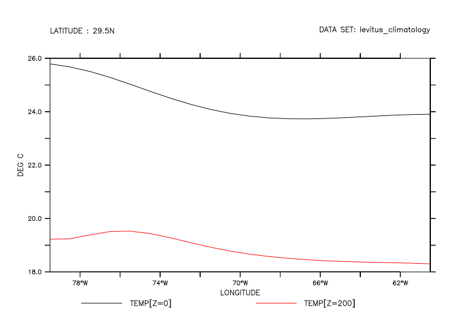
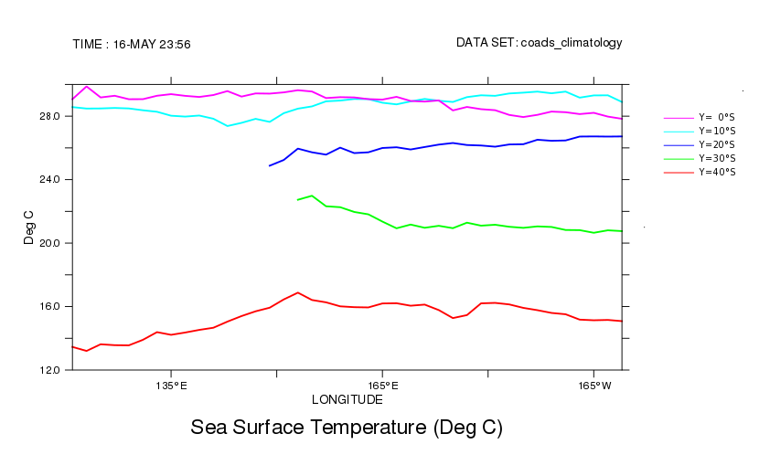

FAQ
Working with the legend on a line plot
Working with the legend on a line plot
Question:
How can I customize the legend on a line plot with several lines?
Example:
If two or more lines are plotted using the same PLOT command, they are automatically drawn on the same plot axes with different line styles. A legend or key is drawn with sample lines labeled with an automatically generated string that describes the variable and the context. Thus if the plot shows the same variable at different times or depths, the different lines have unique labels. For example:
yes? use levitus_climatology yes? plot/y=30/x=280:320 temp[z=0], temp[z=200]

Often we want to define more elegant names to use in this legend, or make a legend somewhere else on the page.
Solution:
See also the FAQ, Custom Legends for line plots.
Beginning with Ferret v6.95, the plot qualifier PLOT/KEY=TITLE, when used with a multi-line plot, labels the legend with the variable titles:
yes? let/units="Deg C"/title="Surface Temp" temp_at_surface = temp[z=0] yes? let/units="Deg C"/title="Temp 200 m" temp_at_200 = temp[z=200] yes? plot/y=30/x=280:320/key=title temp_at_surface, temp_at_200

This form of the PLOT command uses the title and units, just the way the title for a single variable is created. If the units for all the variables plotted are the same, the units are labeled only on the vertical axis (starting with Ferret v7.1). Or to remove the (units) portion of the legend labels, define variables for plotting without units.
PLOT/KEY=TITLE also works for PLOT/OVERLAY plots, labeling the legend lines with the titles of the variables added.
On PLOT/VS plots, the plot axes are labeled with the titles and units of the variables. If further variables are added with PLOT/VS/OVER, then adding /KEY=title will label the legend lines with the variable titles.
More customization is available using scripts. Users have contributed two different sets of 'legend' scripts. legline.jnl and legline_nu.jnl draw labeled lines on a plot at a user-specified location. Alternatively legend.jnl positions a set of legend lines in one of four corners of the plot. To see the contents of these scripts:
yes? go/help legend.jnl yes? go/help legline_nu.jnl
yes? go/help test_legend.jnl yes? go/help legend.jnl
This FAQ will show an example using the legend.jnl script.
Call the PLOT command with /NOKEY to remove the automatic legend, and with /SET so that the legend.jnl script may be called. We'll put the legend in the upper right of the plot box. For the labels, get the titles from the variables using `var,RETURN=title`.
yes? use levitus_climatology yes? let/units="Deg C"/title="Temperature at Surface" temp_at_surface = temp[z=0] yes? let/units="Deg C"/title="Temperature at 200 m" temp_at_200 = temp[z=200] yes? plot/SET/NOKEY/y=30/x=280:320 temp_at_surface,temp_at_200 yes? go legend 1 "`temp_at_surface,RETURN=title`" ur yes? go legend 2 "`temp_at_200,RETURN=title`" ur yes? ppl plot
